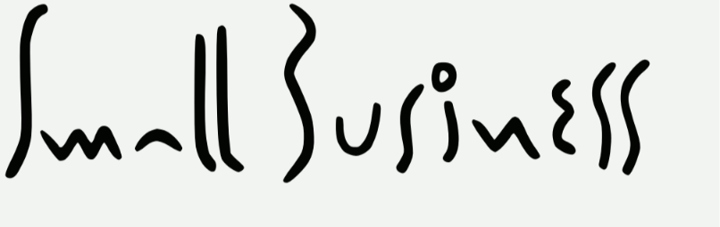

thanks for visiting our website.
current status: pending council registration
what is small business? small business is a project by colin maier. the goal is to produce simple, affordable and healthy fermented vegetable products at a local scale in geelong australia. everyone should have access to high qualty probiotic foods. with that in mind, small business is exploring creative solutions and partnerships to minimise our overheads and maximise our impact. this includes diverting viable produce from the food waste stream into delicious probiotic ferments.
follow us for updates.
email: colin[at]smallbusine.ss
IG: @smallbusiness.fermentation.